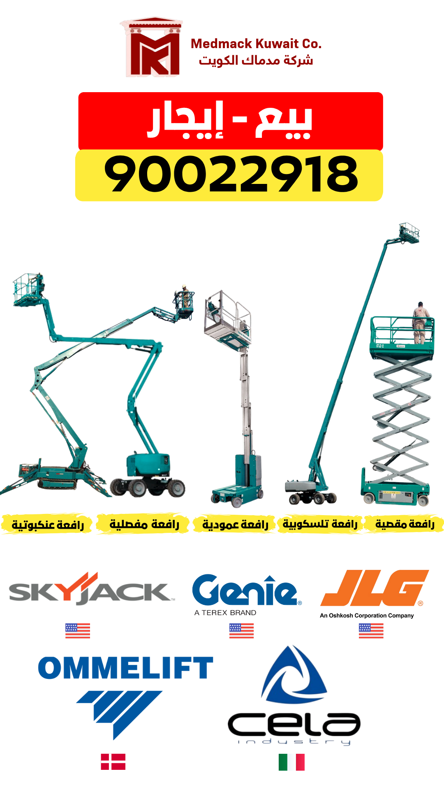
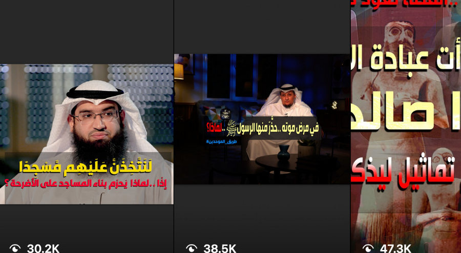
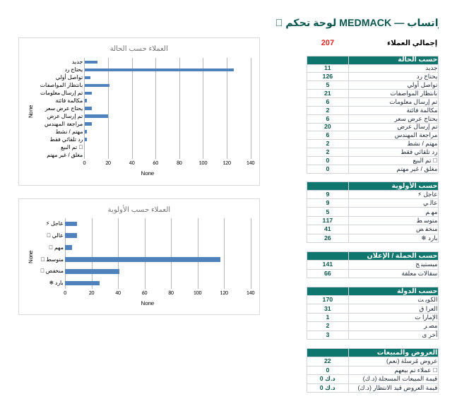
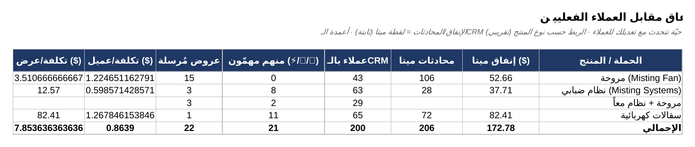
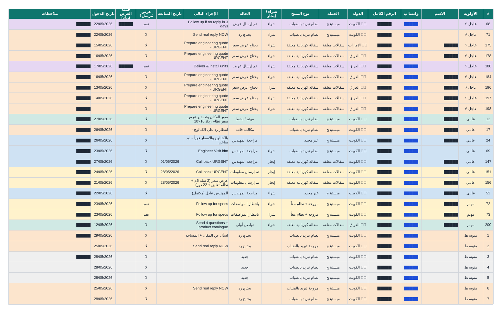
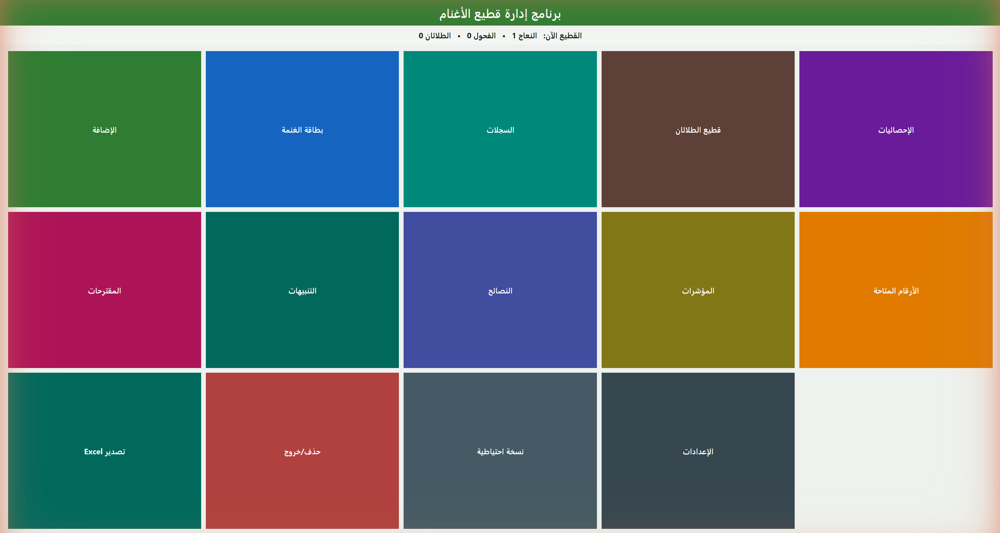
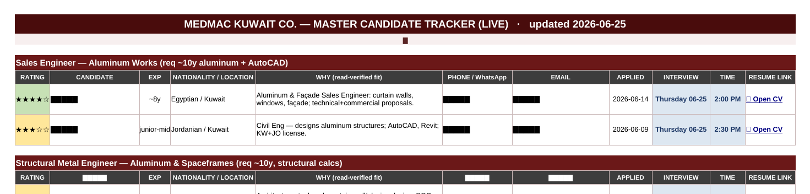

Mohamed Mahmoud · Medmac · Kuwait
I run the paid ads, grow the audiences, build the CRM, ship the software, and automate the rest with AI — for one industrial company in Kuwait. Nine systems. Every number real.
The thesis
Most companies hire a team for this. This one hired a single person — and what follows is nine real systems I built and run. Scroll through them.
01 · Paid social
A measured Meta pilot for a B2B industrial supplier: I turned $172.78 of spend into 206 WhatsApp conversations — at about $0.84 each.
Measured 2026 pilot (1 May – 3 Jun) from the live CRM. I generate the leads — the company's engineer prices and closes — so I report leads, not closed revenue.

02 · Audience growth
I grew an Islamic satellite channel's Facebook from 9.2K to over a million followers — and built three more platforms from near zero.
Public-channel follower counts, self-reported from the channels I ran (2021–2025; concluded 2025). The post-level reach and likes on the right are the real numbers from those posts. A million on Facebook is publicly verifiable — most marketers never reach it.
Real posts · public metrics ↓

03 · Marketing ops
No system existed, so I built one: a 12-tab bilingual CRM that connects every dinar of ad spend to a named lead and a next action.
It shows 0 closed sales — and that's correct: I run marketing and lead-gen; the engineer prices and closes. The system's job is to make sure no lead is lost on the way there.



04 · Brand & content
Reusable kits for social ads, the WhatsApp catalog, and OpenSooq — the brand rules everything is made from — previewable as 18 pages, plus a 10-page print catalog. All bilingual.
05 · Software
An offline, bilingual desktop app for a real sheep farm — a 15-table database, a collision-proof identity model, packaged for Windows + macOS and proven by 59/59 automated tests.
The hard part: ear numbers get reused after an animal is sold or dies — so old and new records can never be allowed to blur together.
Spec-driven, AI-assisted (Claude Code). I'm the architect, decision-maker, reviewer and operator. Business impact was never measured, so I claim only the delivery facts.

العربية06 · Automation
Résumés arrive on three channels at once. 7 Python scripts and 3 scheduled jobs collect, dedupe, read-score and track them daily — and never message a candidate without approval.
Spec-driven, AI-assisted (Claude Code), operated daily by me — I set the roles, rubric and rules, and approve every invitation. Time saved was never measured, so it isn't claimed.

07 · Web · Live
A real company's website — Arabic-default RTL and English — shipped to production on Vercel and scoring 96–100 on Lighthouse. Open it on your phone.
medmac-kuwait.vercel.app ↗Spec-driven, AI-assisted (Claude Code) under a strict no-fabrication policy I set. The site is live; the Lighthouse scores are from real runs on the production build.
08 · AI operating model
One person directs three AI tools through a strict, no-fabrication model. Pointed at 6 months of email, it separated real RFQs from noise, ranked them by deadline, and drafted a reply for each.
The AI tools execute under my direction — I designed the model, wrote the briefs, set the no-fabrication rules, and made every decision. The 4 recovered tenders are the concrete, sourced win.
09 · Career OS · this very site
The AI operating model behind this very site — one person, three tools.
The same model built the site you're scrolling right now.
The offer
Nine systems. One person. Every number real.
Mohamed Mahmoud — Medmac · Kuwait · 2026